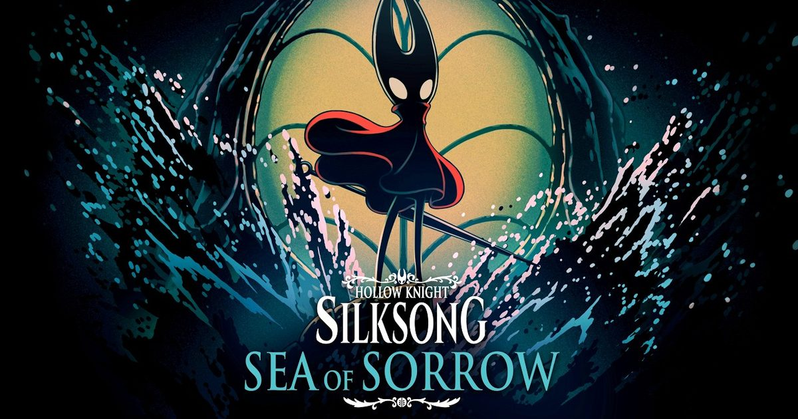

2026-11-27 · 单机 / 独立游戏

11 月 27 日晚 11 点（北京时间），Team Cherry 开了场 26 分钟的线上发布会，名字很随意：Cherry Time!。 会上确认了玩家等了一整年的事——《空洞骑士：丝之歌》首个大型扩展「悲恸之海」（Sea of Sorrow）12 月 11 日上线，对所有拥有本体的玩家完全免费。 预告片最后几秒，还给了一个此前从未出现的东西：钓鱼。
前一天，中文媒体还在猜这场发布会会不会宣布「延期到 2027」。结果没有延期，也没有空降，就是一个很干净的日子：距离今天 14 天。
到这里，大部分报道就结束了：免费、新地图、新 Boss、有钓鱼。 但这场发布会真正有意思的地方，全在官方那两句原文和一个日期上。
这个题最容易写成「良心厂商送免费 DLC」，所以我们先把三层事实切开。
第一层，官方公告原文（Steam 社区公告，11 月 27 日）：
「在『悲恸之海』中，玩家将航行于 Pharloom 那片被遗忘的海洋之上与之下， 越过岛屿、穿过要塞、潜入波浪之下的深洞。 我们花了整整一年，把这场冒险塞满了你在《丝之歌》里会期待的一切——疯癫的角色、高昂的冒险、史诗级的 Boss。 它还装满了 Christopher Larkin 一如既往出色的音乐。」
这段话里有三个信息点，中文报道基本没接：「Pharloom 的海洋」说明这不是一个新大陆； 「岛屿 / 要塞 / 深洞」说明分区是按垂直三段落设计的，不是一张平面图； 「spent the whole year」说明这个体量的东西是排进计划做的，不是临时加的更。
第二层，官方没说、但被当成已说的：
第三层，发布会还顺手做了别的事： 两位创始人 William Pellen 与 Ari Gibson 用开场几分钟，推荐了三款别人的独立游戏—— 漫画改编的叙事冒险《Blokkan: Secret of the Walking City》、像素横版《Radio Rain》、 以及一个自称受《美少女战士》影响、讲植物侦探的《The Botanist and the Translator》。 一场自己的发布会，先花时间放别人的片子。这在 Direct 类节目里不常见，值得单独记一笔。
如果这是一片新大陆、一张可以独立进入的地图，那它完全可以做成付费扩展：独立入口、独立存档点、独立 Boss 线。 但官方说的是「Pharloom 的海洋」。也就是说，新增内容要接进现有的那张地图—— 接在哪个电梯口、要不要改既有的水道、原来的回访路线会不会被打断，这些都得动本体。
这带来一个很实际的结果：它没法作为一件「独立商品」卖出去。 如果本体不更新，这段内容在技术上根本开不了局。所以「免费」在这个项目里不是营销姿态， 而是结构决定的定价——一件不能独立启动的内容，最省事的处理方式就是并进本体。
对照一下更早的先例：2018 年《空洞骑士》的「寻神者」（Godmaster）也是免费的，但它是独立入口—— 一个可以单独进去、单独打的地方。这次不同，这次是往主图里插一块地形。 前者是「加了一个房间」，后者是「在地图上开了一片海」。
这场发布会是 11 月 25 日才预告的，两天后开播，播完 14 天上线。整条时间线是这样的：
把这条线和本体对起来看就明白了：《丝之歌》2019 年 2 月公布，2025 年 9 月 4 日发售—— 中间六年，官方几乎只在两次节点上说过话。这家工作室的对外节奏一直是「沉默 → 短促通知 → 立即兑现」， 从不用长线预热养期待。所以「撤表」其实不是失信，是他们不想在为不确定的日期背书。
代价也很清楚：撤表之后的十一个月，社区只能靠猜。 这期间关于「会不会变成续作」「会不会推 2027」的讨论，全都是真空里长出来的。 从传播效果看这套打法很好用——14 天里全世界都在写它；从玩家体验看就很难受了。 这两件事同时成立，不冲突。
这一条我们翻遍了中文报道，没有一家提。而它恰好是今年最值得记的一笔。
TGA 2026 的日程是公开的：12 月 10 日在洛杉矶孔雀剧院颁奖； 参评资格的截止线是11 月 20 日 21:00（太平洋时间）； 玩家投票在 12 月 9 日截止。而 TGA 官方 FAQ 里对 DLC 的态度写得非常明确：
「TGA 旨在表彰每年最好的创意与技术工作，不论内容以何种形式发行。 扩展包、新赛季、DLC、重制与复刻，均有资格参评所有奖项， 只要评审团认为其中的新创意与新技术值得提名。内容的新鲜度、以及它的价格与价值，都应纳入考量。」
把这几条摆在一起看：「悲恸之海」比资格截止日晚了 21 天，比颁奖礼晚 1 天。 所以它在规则上不属于 2026 赛季，而是整体落进 2027 赛季。
我们不认为有证据说 Team Cherry 是在算 TGA——这家工作室连发售日都只提前两周说，不太像会去研究评奖日历的团队。 但从结果看，这个日期确实办成了三件事：避开了「刚上线三天就被拉去评年度内容」的尴尬； 避开了颁奖周那一堆世界首播的注意力挤压；同时赶在圣诞档前把内容铺到所有平台。
还有一个细节值得玩味：TGA 的规则里专门提了「价格与价值」要纳入考量。 一份定价为零、内容量按官方说法是「整年」做出来的扩展，在这一条上几乎是无解的加分项。 如果它真进了 2027 的提名名单，评委要面对的正是这个规则缝隙。
很多人把「免费」读成慷慨。但从商业结构看，它更像是唯一可选的定价。三个数摆出来就清楚了。
第一，本体已经卖到头了。 官方在 2025 年 12 月公布的数字是全球销量突破 700 万份，另有数百万 Xbox Game Pass 订阅用户触达； 第三方估算口径（Steam 单平台约 870 万份、全平台流水约 1.97 亿美元）更高，但那是估算，我们只作参考。 对一个定价 19.99 美元、无内购、无赛季的买断制产品，700 万之后每多卖一份的边际难度都在上升。
第二，本体的人已经在往外走了。 按第三方对 Steam 公开数据的采样，月均日活是这样的走向：
四个月掉了约 37%。作为参照，本体的历史峰值是 58.6 万同时在线—— 也就是说现在还在玩的人，只剩峰值的百分之一上下。这就是免费扩展要解决的问题：不是拉新，是把人叫回来。
第三，付费会把「回流」变成「二次决策」。 这是最关键的一点。一个已经通关、把游戏从硬盘里删掉的人，看到「免费更新」时的动作是下载； 看到「9.99 美元扩展」时的动作是判断值不值。前者一步，后者三步（回忆、比价、决定）。 在流失曲线的这个位置，任何一步多余的动作都会砍掉大半转化。
所以免费不是让利，是把摩擦降到最低的回流装置。 而且它同时服务了第二件事：Switch 2 版的免费升级、以及已经进公开测试分支的 16:10 / 21:9 超宽屏支持—— 说明「重发售」和「内容更新」在这家工作室的排期里是同一件事。 12 月 11 日这一天，老玩家拿到新地图，新硬件拿到新卖点，一次动作喂两边。
预告片最后几秒的钓鱼，被大多数报道当彩蛋处理。我们认为它是这次更新里信息量最大的一个镜头。
理由是：《丝之歌》到目前为止，所有的资源循环都绑在战斗和探索上。 念珠（Rosary）靠打和捡，工具槽与纹章（Crest）靠 Boss 与探索点，没有一处是「不打架也能稳定产出」的。 这意味着一旦玩家卡在某个 Boss 面前，整条经济链就停了——这也是这部作品口碑里「难度不留情」的一部分来源。
钓鱼正好补上这个缺口：一个低压力、可持续、不依赖战斗的补充口。 从设计成本看它也是最划算的：一个交互点加一张概率表，就能撑住玩家在海面的停留时长。 它同时还是一层教学——海面与水下是这个扩展的核心机制，而钓鱼逼你先熟悉「什么时候在水上、什么时候在水下」。
换句话说，这条鱼不是为了可爱才放进去的。它是这次扩展经济结构要变的信号。
这个分数评的不是我们还没玩到的内容，而是这套安排本身： 一个结构上必须免费、日期上刚好避开评奖窗口、时间上给了两周准备期的扩展。 扣分主要在两处：撤表之后的十一个月信息真空，以及体量至今没有一个可核对的数字。
一、发布会的前半段是别人的。 一场只有 26 分钟、全球几十家媒体在等的发布会，Team Cherry 用它推了三款独立游戏。 换成任何一家中型发行商都不会这么做。这很像 2010 年代独立圈的那种互相抬轿子的习惯， 只是现在抬轿子的这顶轿子，是全世界都在等的那个。
二、「整年」这个说法本身就是体量声明。 三个人做一整年，和三百人做一整年，完全是两个东西。Team Cherry 的核心团队规模一直是业界最小的那一档， 所以「spent the whole year」这句话，我们更愿意读成「这是我们一年产能的全部」，而不是「我们顺便做的」。
三、中文圈的预期管理这次是失败的。 11 月 26 日的报道里，主流猜测是「空降」「年内定档」「延到 2027」三选一。 结果三种都不完全对：不是空降（提前 14 天说），确实是年内，但也不完全算「定档公布」—— 它是在一场发布会里被顺带确认的。信息本身没问题，问题在于此前一年官方一句话都没有。
我们不太喜欢「良心厂商」这个说法，因为它把一件结构性的事说成了道德选择。 Team Cherry 做免费扩展，是因为：本体已经卖到饱和、内容无法独立启动、团队没有第二套变现通道、而这个 IP 的价值还在长尾上。 这四条同时成立的时候，免费是唯一能让所有指标都往上走的选项。
反过来说，如果哪天他们出一款独立的新作并且定价 25 美元，那也很正常—— 那是另一套结构，不该用「你们以前都免费」去要求它。 把商业判断当成道德承诺，最后受伤的总是玩家自己。
| 案例 | 形态 | 能否独立启动 | 定价逻辑 |
|---|---|---|---|
| 《空洞骑士》寻神者（2018） | 独立入口的新区域 + Boss 连战 | 可以 | 免费，作为口碑回馈 |
| 《丝之歌》悲恸之海（2026） | 缝进 Pharloom 主图的一片海域 | 不能 | 免费，结构决定 |
| 一般厂商的大型付费扩展 | 独立章节 / 独立启动器 | 通常可以 | 按内容时长定价 |
这张表想说的是：「免费」这件事在这个项目里，更多是被形态推着走的，不是被善意推着走的。
12 月 11 日是《丝之歌》发售以来最大的一次版本跃迁。这类更新最常见的坑不是内容不好玩， 而是存档兼容——尤其是地图被改动的作品。我们按经验列一份清单，14 天里可以慢慢做：
%USERPROFILE%\AppData\LocalLow\Team Cherry\ 下；
macOS 在 ~/Library/Application Support/ 里对应的 Unity 目录下。
具体路径以你本机实际为准，别照抄。备份就是把整个文件夹复制一份到别处。最后一条建议：12 月 11 日当天别急着开新档。 先看两小时社区反馈，确认读档没问题，再决定是「用老档接着打」还是「重开一轮体验完整流程」。 免费内容可以等一天，通了两百小时的存档等不起。
信息来源：《空洞骑士：丝之歌》Steam 社区官方公告《Sea of Sorrow, free for all players December 11!》（2026-11-27）、 Team Cherry「Cherry Time! Special Presentation - November 2026」直播内容（2026-11-27）、 官方「悲恸之海」上线预告片（Team Cherry 官方频道）、 The Game Awards 官方 FAQ 与 2026 赛程页（12 月 10 日颁奖、11 月 20 日资格截止、12 月 9 日投票截止、DLC 参评条款）、 Team Cherry 2025 年 12 月关于销量与扩展的公告（700 万份口径）、 第三方 Steam 数据站（Raijin / SteamData）对销量、同时在线与月度日活的估算（文中已标注为估算，非官方数字）。 12 月 11 日的 TGA 排期关系属编辑部观察，官方未就此作出任何说明，文中不作因果断言。